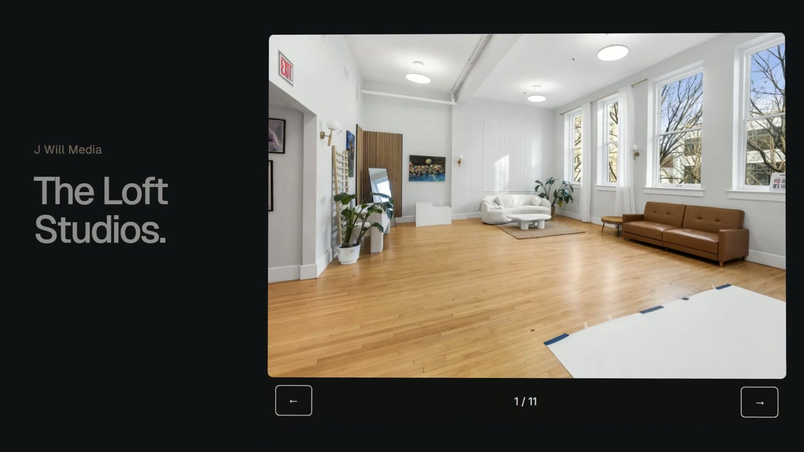
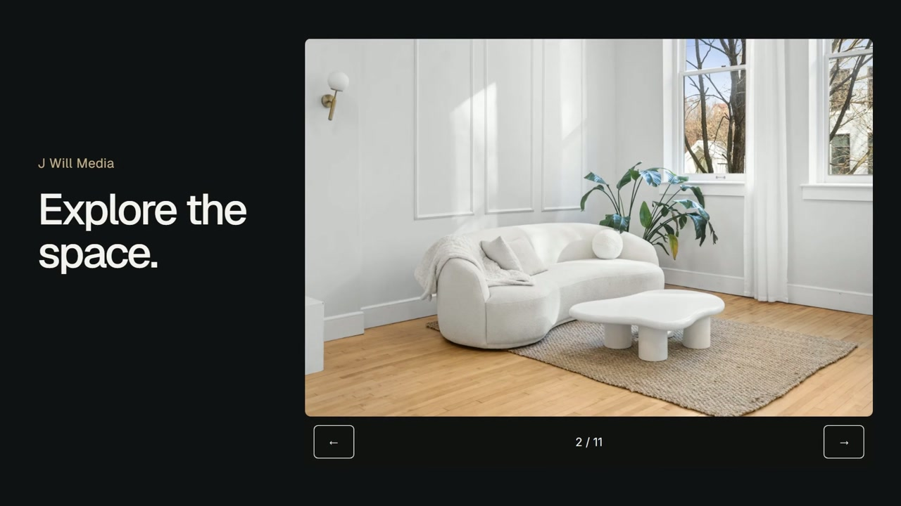

Discover
Studio spaces and creative work presented through galleries.
J Will Media / Marquee
A studio website with space galleries and a path from browsing the work to making an inquiry. Behind it, an owner workspace keeps customer conversations and follow-up organized.
Studio spaces and creative work presented through galleries.
Structured inquiries and customer conversations.
An owner workspace for contacts, messages, and campaigns.

